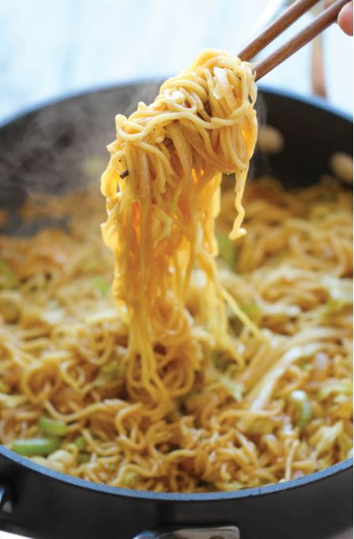

Panda Express Chow Mian Copycat

Ingredients
- 1/4 cup reduced sodium soy saucea
- 3 cloves garlic, minced
- 1 tablespoon brown sugar, packed
- 2 teaspoons freshly grated ginger
- 1/4 teaspoon white pepper
-
2 (5.6-ounce) packages refrigerated Yaki-Soba, seasoning sauce packets
discarded*
- 2 tablespoons olive oil
- 1 onion, diced
- 3 stalks celery, sliced diagonally
- 2 cups shredded cabbage
Instructions
-
In a small bowl, whisk together soy sauce, garlic, brown sugar, ginger
and white pepper; set aside.
-
In a large pot of boiling water, add Yaki-Soba until loosened, about
1-2 minutes; drain well.
-
Heat olive oil in a large skillet over medium high heat. Add onion and
celery, and cook, stirring often, until tender, about 3-4 minutes.
Stir in cabbage until heated through, about 1 minute.
-
Stir in Yaki-Soba and soy sauce mixture until well combined, about 2
minutes.
- Serve immediately.